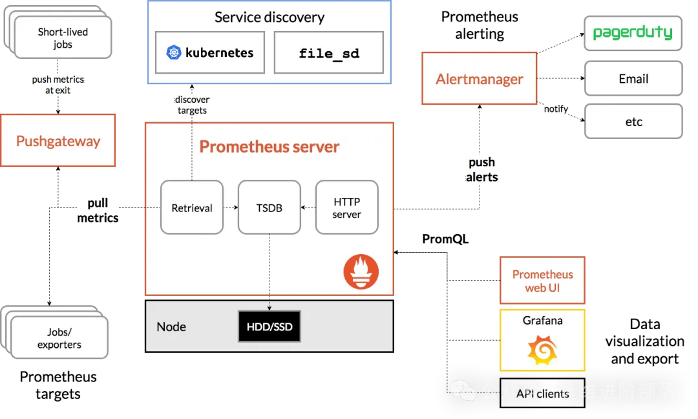
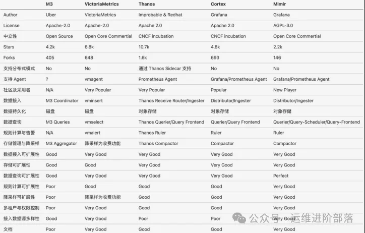
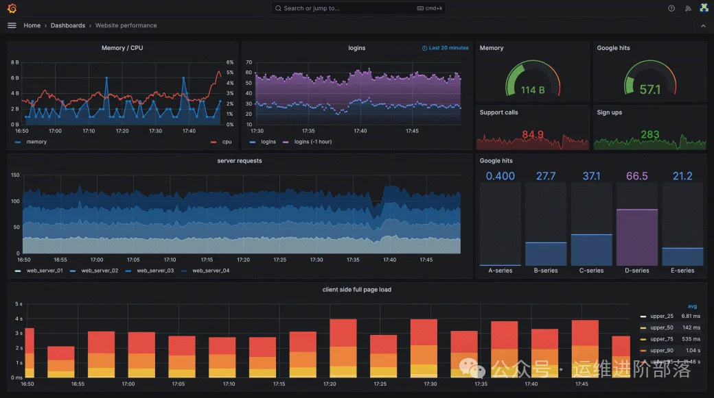

概述
- 本篇总结Prometheus使用
是什么
Prometheus 是云原生时代最流行的监控系统。如图所示的 Prometheus 架构，它通过不同的子功能实现埋点采集、爬取和传输、存储、计算、展示等，再通过搭积木的方式，组合出一个以应用为中心，功能强大的监控告警系统。

额外知识
Google 的 Borg 系统孕育出了 Kubernetes，Prometheus 的前身 —— Google 内部的监控系统 Brogmon 则由前 Google工程师在 Soundcloud 以开源软件的形式继承下来。
总结对 metrics 的处理以及分析 Prometheus 架构，所有监控系统总体上要解决的问题其实就 3 个：
监控指标用什么形式表示（确定指标的数据模型）。
怎么收集和存储指标。
怎么利用指标生成报表。
为什么
- Open-Falcon 在 tags 字段之外，定义了一个特殊的标签，即 endpoint，endpoint 在物理机场景下一般会被设定为 hostname 或者 ip:port；在物联网场景下，一般是设备名称；在容器场景下，一般会是容器的 ip。为什么在当初要定义一个 endpoint 这样的一等公民标签呢？这个标签又有什么特殊性呢？说到底是在系统设计上犯了一个核心的错误：定位不明确。既要又要，既想要满足当时处于主流的物理机运维模式（在物理机场景下，hostname 是最重要的一个『维度』），又想兼顾未来物联网、容器场景。后来的事实证明了，定位不明确、不聚焦是行不通的.
- Prometheus 从第一天起，并没有把重心放在什么扩展性的问题上；从第一天起，就从 data model 定义上，抛弃了 hostname ，完全围绕着 metric 字段，结合 label 形成灵活、普适的表达形式，以及进而形成了灵活的监控数据检索标准 PromQL ；从第一天起，就咬定了 Kubernetes ，聚焦在云原生场景，抓住主要矛盾，做标准，建生态。
怎么办
1. 数据模型
Prometheus 的数据模型，简而言之就是一个时序类型的 Metric 数据，它主要由四个部分组成：metric 名称、labels、时间戳和数值。
<metric_name>{<label_name1>="<label_value1>", <label_name2>="<label_value2>", ...} <value> [<timestamp>]
prometheus_http_requests_total{status="200", method="GET"} 12345 1618324800000
指标名称表示被监控样本的含义，譬如 http_request_total 表示当前系统接收到的 HTTP 请求总量，标签反应当前样本的特征维度，通过这些维度 Prometheus 对样本数据进行过滤，聚合等，数值表示度量的实际值，时间戳为数据收集的时间。
以 Prometheus 为例，它支持四种不同指标表示类型：
-
Counter（计数器）: Counter 类型的指标其工作方式和计数器一样，初始为 0，只增不减（除非系统发生重置）。常见的监控指标，如 http_requests_total，node_cpu 都是 Counter 类型的监控指标。
-
Gauge（仪表盘）：与 Counter 不同，Gauge 类型的指标侧重于反应系统的当前状态。因此这类指标的样本数据可增可减。常见指标如：node_memory_MemFree（主机当前空闲的内容大小）、node_memory_MemAvailable（可用内存大小）都是Gauge类型的监控指标。
-
Histogram（直方图）：观测采样统计分类数据，观测数据放入有数值上界的桶中，并记录各桶中数据的个数。典型的应用有延时在 0~50ms 的请求数，500ms 以上慢查询数，大 Key 数等。
-
Summary（摘要）：聚合统计的多变量，跟 Histogram 有点像，但更有聚合总数的概念。典型应用有成功率、总体时延、总带宽量等。
2. 收集指标
不同监控系统收集 Metrics 数据基本就两种方式：
-
通过 push 到中心 Collector 方式采集（譬如各种 Agent 采集器，Telegraf 等）；
-
中心 Collector 通过 pull 的方式主动获取。
如图 所示，Prometheus 主动从监控源拉取暴露的 HTTP 服务地址（通常是/metrics）拉取监控样本数据。
3.1 Exporter
Exporter 一个相对开放的概念，可以是一个独立运行的程序独立于监控目标以外，也可以是直接内置在监控目标中，只要能够向 Prometheus 提供标准格式的监控样本数据即可。
Prometheus 相比 zabbix 这类只监控机器的传统监控系统，最大的特点是对 Metrics 全方位的覆盖：
-
宿主机监控数据：Node Exporter 以 DaemonSet 的方式运行在宿主机，收集节点的负载、CPU、内存、磁盘以及网络这样的常规机器的数据。
-
Kubernetes 本身的运行情况：Kubernetes 的 API Server、Kubelet 等组件内部通过暴露 /metrics 接口，向 Prometheus 提供各个 Controller 工作队列、请求 QPS 等 Kubernetes 本身工作的情况。
-
Kubernetes Workload 相关的监控：kuelet 内置的 cAdvisor 服务把 Metrics 信息细化到每一个容器的 CPU、文件系统、内存、网络等资源使用情况。
除了上述监控范围，Prometheus 的社区也涌现出大量各种用途的 Exporter，如表 9-1 所示，涵盖了从基础设施、中间件以及网络等各个方面，让 Prometheus 的监控范围涵盖用户关心的所有目标。
| 领域 | 常用Exporter |
|---|---|
| 数据库 | MySQL Exporter、Redis Exporter、MongoDB Exporter、MSSQL Exporter 等 |
| 进程性能 | process-exporter |
| 硬件 | Apcupsd Exporter、IoT Edison Exporter、IPMI Exporter、Node Exporter 等 |
| 消息队列 | Beanstalkd Exporter、Kafka Exporter、NSQ Exporter、RabbitMQ Exporter 等 |
| 存储 | Ceph Exporter、Gluster Exporter、HDFS Exporter、ScaleIO Exporter 等 |
| HTTP服务 | Apache Exporter、HAProxy Exporter、Nginx Exporter 等 |
| API服务 | AWS ECS Exporter、Docker Cloud Exporter、Docker Hub Exporter、GitHub Exporter 等 |
| 日志 | Fluentd Exporter、Grok Exporter 等 |
| 监控系统 | Collectd Exporter、Graphite Exporter、InfluxDB Exporter、Nagios Exporter、SNMP Exporter 等 |
| 其它 | Blackbox Exporter、JIRA Exporter、Jenkins Exporter、Confluence Exporter 等 |
关于Blackbox_Exporter
-
blackbox_exporter是Prometheuse官方提供的一个exporter，可以通过HTTP、HTTPS、DNS、TCP和ICMP对被监控节点进行监控和数据采集，还可以探测SSL证书过期时间。
-
Blackbox Exporter 支持多种协议和检查类型，包括但不限于：
-
- HTTP(S)：对 Web 服务器的响应状态、响应时间进行探测，URL/API可用性检测。
-
- DNS：域名解析，检查 DNS 解析的速度和正确性。
-
- TCP：通过建立TCP连接来验证端口的开放情况和服务的可达性。（端口监听检测）
-
- ICMP：利用ping命令来检测远程主机是否在线（主机存活检测）。
-
- gRPC：对gRPC服务的健康状况进行检查。
3. 存储指标
如果 Metrics 数据的主要作用是监控，那么你要考虑这类数据有没有长期存储的必要？
默认情况下，Prometheus 将数据存储在内置的 TSDB（时序数据库）中，并设定了默认的存储时限。这个数据库的设计初衷是为了实现监控数据的高性能查询，而非分布式处理，如果本地磁盘或节点出现故障，存储将无法扩展和迁移。
当然 Prometheus 也考虑了长期存储的场景，你可以通过 Prometheus 的远端存储扩展（Remote Read/Write API）将数据存储到任意第三方存储上。目前，社区已经涌现出大量适用于长期时序数据存储的解决方案，如 Thanos、VictoriaMetrics、SignalFx、InfluxDB 和 Graphite 等。
如图所示的 Prometheus 长期存储方案对比，读者可以根据这些对比，选择最适合自己的方案。

4. 生成图和报表
在仪表可视化领域，如果 Grafana Dashboard 称第二，应该没有敢窜出来称第一的。
Grafana Labs 公司成立之前，Grafana Dashboard 就已经在各个开源社区有不小的名气和用户积累。依靠社区的用户基础，Grafana Labs 也快速地将产品渗透至各个企业，各类大场面也时不时会见到 Grafana 的身影[1]：
2016年，在猎鹰9号火箭首次发射期间，Grafana 出现在 SpaceX 控制中心的屏幕上；
几周后，微软发布一段宣传视频，展示了他们的水下数据中心，同样出现了 Grafana 的身影。
Grafana 的 slogan 是“Dashboard anything. Observe everything.” ，Prometheus 定义了功能强大的 promQL，可以满足各种复杂的查询场景。而 Grafana 提供了对 PromQL 的完整支持。两者结合的结果是：只要你能想到的数据就能转成任何你想要的图表。

5. SQL语句使用
- label_replace用法
label_replace(v instant-vector, dst_label string, replacement string, src_label string, regex string)
有4个输入参数
- 1 v, 就是个指标。 可以多种情况
-
- 1.1 比如简单的：
namedprocess_namegroup_memory_bytes{groupname=~".*router.*", memtype="resident", job="$job"}
- 1.1 比如简单的：
-
- 1.2 嵌套一层rate函数:
rate(namedprocess_namegroup_cpu_seconds_total{groupname=~"$processes", job="$job"}[$interval])
- 1.2 嵌套一层rate函数:
-
2 目标label
-
- 就是我要替换哪个label， 比如一个指标它有多个label，比如
http_requests_total{code=“400”,handler=“query”,instance=“120.77.65.193:9090”,job=“prometheus”,method=“get”}, 那么它有code、handler、instance、job、method 5个label，这几个label都可以替换。并且这里替换是完全替换
- 就是我要替换哪个label， 比如一个指标它有多个label，比如
-
3 替换的字符串
-
- 3.1 这里可以直接是字符串
-
- 3.2 也可以是$0\$1\$2这种形式，这种形式就是正则表达式捕获的group，$0代表整体，$1代表第一个组，以此类推
-
4 源label
-
- 4.1 如果你是上面3.1这种情况，其实源label可以随便写，应该是没用
-
- 4.2 如果你是上面3.2这种情况，那源label就是指定正则表达式用哪个字符串，比如选了instance，那么源字符串就是"120.77.65.193:9090"
-
5 正则表达式
-
- 5.1 如果你是上面3.1这种情况，其实正则表达式可以随便写，应该是没用，不会进行正则匹配
-
- 5.2 如果你是上面3.2这种情况，源字符串已经在4这一步写了，5这里就写一个正则表达式，通过正则表达式捕获到的内容会替换掉2里的label